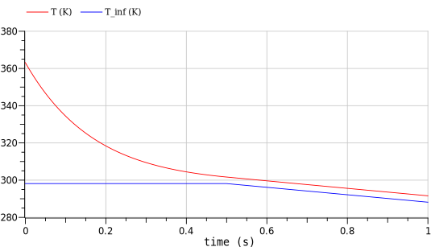
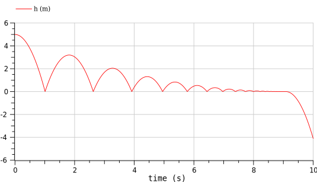
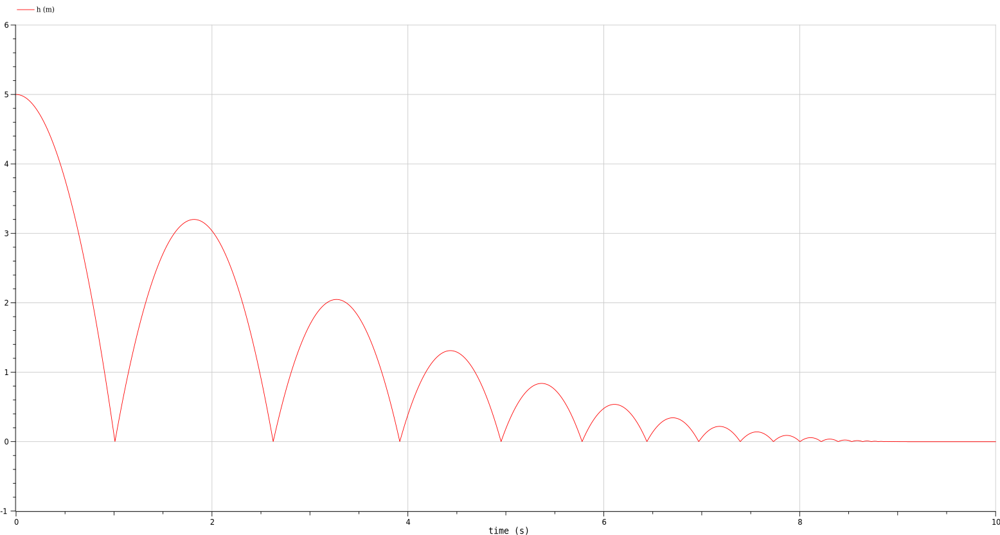

离散行为 discrete
我们想所有的模型都是连续且稳定的，但事实上却不尽然。以牛顿冷却定律为例，如果在自然冷却的过程中，我们开了空调，导致环境温度发生了变化，这个时候应该怎么做呢？
model NewtonCoolingDynamic
"Cooling example with fluctuating ambient conditions"
// Types
type Temperature=Real(unit="K", min=0);
type ConvectionCoefficient=Real(unit="W/(m2.K)", min=0);
type Area=Real(unit="m2", min=0);
type Mass=Real(unit="kg", min=0);
type SpecificHeat=Real(unit="J/(K.kg)", min=0);
// Parameters
parameter Temperature T0=363.15 "Initial temperature";
parameter ConvectionCoefficient h=0.7 "Convective cooling coefficient";
parameter Area A=1.0 "Surface area";
parameter Mass m=0.1 "Mass of thermal capacitance";
parameter SpecificHeat c_p=1.2 "Specific heat";
// Variables
Temperature T_inf "Ambient temperature";
Temperature T "Temperature";
initial equation
T = T0 "Specify initial value for T";
equation
if time<=0.5 then
T_inf = 298.15 "Constant temperature when time<=0.5";
else
T_inf = 298.15-20*(time-0.5) "Otherwise, increasing";
end if;
// 另一种简单写法
// T_inf = 298.15 - (if time<0.5 then 0 else 20*(time-0.5));
// 或者
// T_inf = 298.15 - max(0, 20*(time-0.5));
m*c_p*der(T) = h*A*(T_inf-T) "Newton's law of cooling";
end NewtonCoolingDynamic;
弹跳球
小球在桌子上弹跳，在接触桌子的瞬间，会立刻以下降速度 弹起，其中 弹起前一瞬间的速度：
这时，我们需要使用reinit() 函数和pre() 函数来重新初始化速度：
model BouncingBall "The 'classic' bouncing ball model"
type Height=Real(unit="m");
type Velocity=Real(unit="m/s");
parameter Real e=0.8 "Coefficient of restitution";
parameter Height h0=1.0 "Initial height";
Height h;
Velocity v;
initial equation
h = h0;
equation
v = der(h);
der(v) = -9.81;
when h<0 then
reinit(v, -e*pre(v)); ·// reinit 重新初始化v
// pre(v) 上一个状态值v
end when;
// 如果尝试用if 去代替when，则会报以下错误：
// Operator reinit may only be used in the body of a when equation.
// reinit 只能在when 内使用
// Argument 1 of pre must be a discrete expression, but v is continuous.
// pre 的参数应该是离散的，但是v 是连续的（因为我们的模型默认是连续的）
// 当尝试用`v= -e*pre(v);` 代替reinit 时，发现系统依然会报错。因为这与`v = der(h);` 冲突了
end BouncingBall;可以理解为通过when 语句设置了一个触发器，当系统到达某一状态时，就会触发并执行内部的过程（以当前状态为初始值，重启积分计算）。但是该触发器不会被持续触发，除非状态变量恢复之后重新满足触发条件，上例中当小球高度满足h>0 后便能重新触发when 语句。这也是导致下面问题的原因。
弹球仿真时的问题
如果仿真时间足够长，则会遇到一个神奇的问题：

小球掉到地平线以下去了。为了解决这个问题，我们需要引入一定量的迟滞（死区）。即当h<0时会触发该事件，但是要该事件再次被触发，需要满足第二个条件h>ε，一个不大的值。
model StableBouncingBall
"The 'classic' bouncing ball model with numerical tolerances"
type Height=Real(unit="m");
type Velocity=Real(unit="m/s");
parameter Real e=0.8 "Coefficient of restitution";
parameter Height h0=1.0 "Initial height";
constant Height eps=1e-3 "Small height";
Boolean done;
Height h;
Velocity v;
initial equation
h = h0;
done = false;
equation
v = der(h);
der(v) = if done then 0 else -9.81;
when {h<0,h<-eps} then // 在小球的高度低于某一点时被触发，终止弹跳
done = h<-eps;
reinit(v, -e*(if h<-eps then 0 else pre(v)));
end when;
end StableBouncingBall;when 内的代码只有在触发条件为真（只要有一条为真即可）的一瞬间被激活，其他时刻不会受影响，相当与一个触发器。而if 则相当于一个比较器。修复后的小球会稳定在一个极小的负高度-0.001m左右，如下图所示：

事件状态的处理
这一节本应属于离散行为，但是因为牵扯到数值计算的核心问题，我想还是单独记录一下。以基本衰减模型为例：
模型代码也很简单：
model Decay1
Real x;
initial equation
x = 1;
equation
der(x) = -sqrt(x);
annotation(experiment(StopTime = 5));
end Decay1;虽然设置的终止时间是5s， 但是在数值积分时在2s 时就混入错误使得x 小于0，提前终止。更神奇的是，下面这种保护表达式根本不起作用。
der(x) = if x>=0 then -sqrt(x) else 0; // 因为直到事件发生，行为都不会改变
// 即在x<0 的那一刻，求解器仍然会使用 der(x) = - sqrt(x)
// der(x) = if x>0.000001 then -sqrt(x) else 0; // 此语句则可以很好的工作一般的，我们可以采用noEvent(x>=0) 来抑制过零函数事件。
der(x) = if noEvent(x>=0) then -sqrt(x) else 0;
// 使用事件抑制只用于行为变化是平滑过渡的时候，否则会带来性能问题抖振（不常见）
以下面模型为例：
model WithChatter
Real x;
initial equation
x = 2;
equation
der(x) = if x>=1 then -1 else 1;
annotation(experiment(StopTime = 2));
end WithChatter;理论上在函数值接近于1 的时候，它的值都不会再变更。但是因为频繁的斜率变动，将导致x 总在1 上下抖动，进而产生很多事件。仿真速度也会变慢。为了消除这种现象，我们同样需要将x>=1 用noEvent() 包裹起来。最终结果几乎一致，但是性能更好（也没好太多）。
但是使用noEvent 会影响仿真的精度，所以还是酌情使用。
采样
model SampleAndHold "Measure speed and hold"
extends BasicEquations.RotationalSMD.SecondOrderSystem;
parameter Real sample_time(unit="s")=0.125;
discrete Real omega1_measured; // discrete 表示测量值是离散的，但是该关键字并不是必须的。
equation
when sample(0,sample_time) then // 以0.125s 的间隔对omega 进行采样
omega1_measured = omega1;
end when;
end SampleAndHold;同步
因为工作暂时用不到，略。
事件
事件可以由事件产生，例如所有模型都默认有time 变量；时间也可以由关系运算与逻辑运算产生。此外，当以下函数返回值不连续时，就会产生事件：
| 函数 | 描述 |
|---|---|
| div(x,y) | 省去小数部分的代数商。 |
| mod(x,y) | x/y的模数 |
| rem(x,y) | 代数除法的余数 |
| ceil(x) | 不小于x的最小整数 |
| floor(x) | 不大于x的最大整数（返回Real） |
| integer(x) | 不大于x的最大整数（返回Integer） |
| initial() | 初始化时为true，否则为false |
| terminal() | 仿真结束时为true，否则为false |
| sample(t0,dt) | 在t0时刻以及以后的每dt秒生成一个事件 |
| edge(x) | 仅在x变为true的一瞬间为true |
| change(x) | 每当x改变时为true |
不会产生事件的函数：
| 函数 | 描述 |
|---|---|
| abs(x) | x的绝对值 |
| sign(x) | x的符号（返回-1、0或1 ） |
| sqrt(x) | x的平方根 |
| min(x,y) | x和y中的最小值 |
| max(x,y) | x和y中的最大值 |
与事件相关的操作符：
| 函数 | 描述 |
|---|---|
| pre(x) | 在事件的发生时保存了x在事件前的取值 |
| previous(x) | 在一个时钟节拍内保存了x在上个时钟节拍的取值 |
| hold(x) | 任何时间都保存了x在上个时钟节拍的取值 |
| sample(expr,clock) | 在一个时钟节拍内expr的取值 |
| noEvent(expr) | 抑制expr内产生的事件 |
| smooth(expr,p) | 表示expr至少p次可导 |